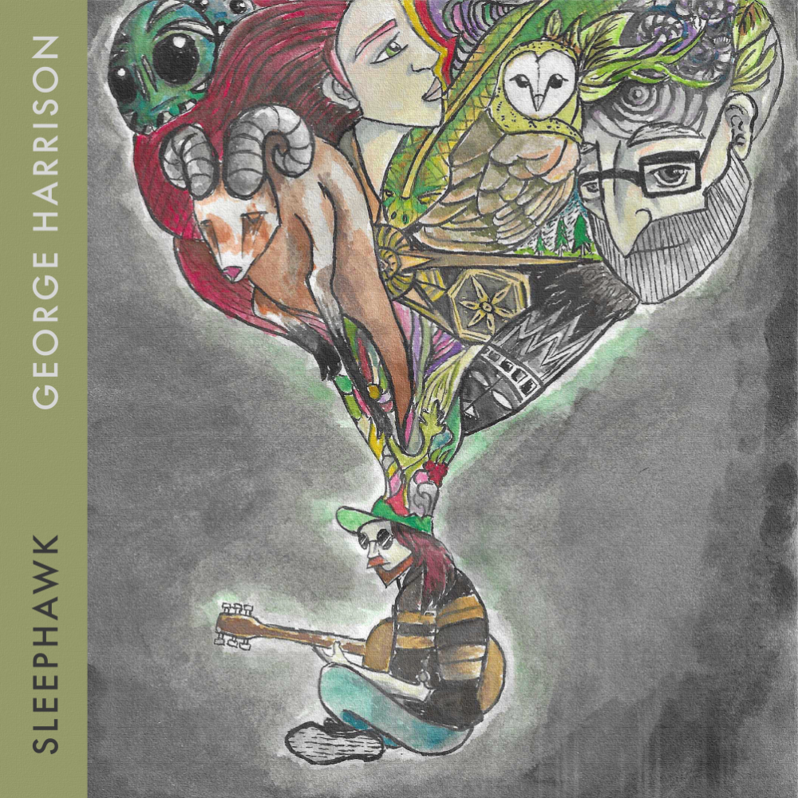

GEORGE HARRISON
SLEEPHAWK

For a single inspired by the fact that throughout life
many people have pointed out my likeness to George Harrison — the song explores
identity, especially the unique feeling of being a musician in this age: living
in the shadow of greater musicians, and how to enjoy being who we are without
comparing (too much).
I completed it whilst in Bangkok using pen and cheap watercolours I found
at a hardware shop, reflecting on
the symbols that make me who I am and including as many as possible in the colorful
plume coming out of my head.